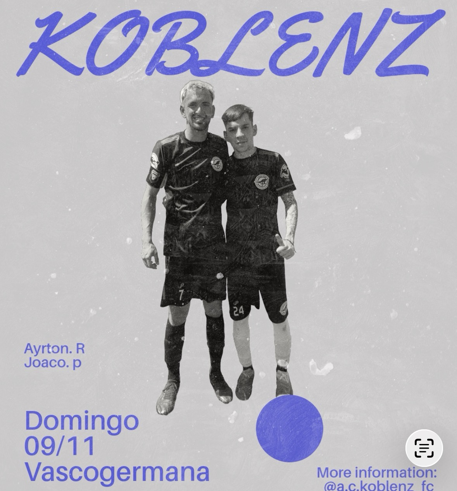
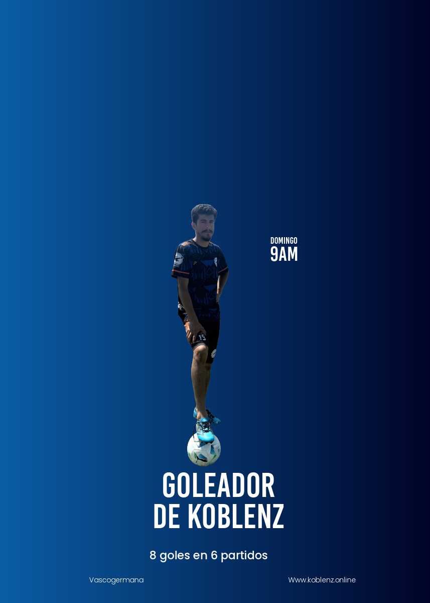

Últimas noticias

Victoria en el Campeonato
Ganamos 5-0 en un gran partido del equipo. Gracias a la hinchada por el apoyo.El equipo jugaba contra el primero de la zona que venia sin derrotas, Koblenz arranca dominando el partido teniendo llegadas claras, asta que llega el primer corner a favor, el que estaba preparado para tirarlo era Maxi Montaño, tira el un centro bien pateado pero logran rechazarlo a su ves cae en Joshua Godoy para despues meter una asistencia a Ayrton Rodriguez para definir metiendo un leve salto dandole de zurda, Koblenz gana el partido 1-0, a los 10min. Koblenz iba ganando pero a los 25 minutos un corner del rival mal pateado le cae a Braian Arriola que sale corriendo, se la pasa a Lucas Maldonado, salimos de contra ataque, quedando mal parado el rival, que en velocidad se la lleva Ayrton Rodriguez da una buena asistencia a Javier Castro para que defina con delicadeza para poner el 2-0 el equipo termina el primer tiempo ganando. Arranca el segundo tiempo, koblenz lleva la ventaja y dominando el partido, pero en un contra ataque del rival casi marcan el descuento. una buena salvada de Fede.B hizo que koblenz mantenga el arco en 0. el rival intenta jugar de contra ataque pero Maxi Montaño roba y asiste a Javier Castro que gambeteando a los 10 min, cambiandosela de palo al arquero que quedo mal parado marca el 3 a 0. finanalizando el partido una recuperacion de Joshua Godoy para darsela a Aksel Hernandez para que de una gran asistencia de 40Mts a Maxi Montaño que le gana la espalda a defensa rival y llegando al borde del area se la cruza al arquero dejando un marcador bastante elevado y con el golazo del partido. 4-0 ganando, pero koblenz iba a tener una oportunidad mas que no la iba a dejar pasar, A los 35min el arquero rival se equivoca en la salida, Maxi Montaño la roba y se la pasa a Lucas Maldonado para que de primer toque defina cruzado y estampe el marcador final 5-0 GANO KOBLENZ. Formacion: En el arco:
Fede B.
La defensa inicial:Braian L, Alan S, Joshua G, Aksel.
El mediocampo:Braian A, Ayrton R, Joaco P, Lucas M y Maxi M.
Solo de delantero:Javier Castro
Despues entraron:Agustin M, Gonzalo S, Axel T y Michi
Director Tecnico:Dario Z
Ayudante de Campo:Cristian S
KOBLENZ 5 vs 0 EINDECHSEN FC; GOLES:Ayrton Rodriguez; Javier Castro x2; Maxi Montaño; Lucas Maldonado
M.V.P
Ayrton Rodriguez y Joaquin Patteta Los jugadores del partido vs Eindechsen Fc.
Goleadro de Koblenz.
Javier Castro.
¿Querés venir a ver un partido?
Comprá entradas anticipadas o en boletería. Seguinos en redes para no perderte fechas.